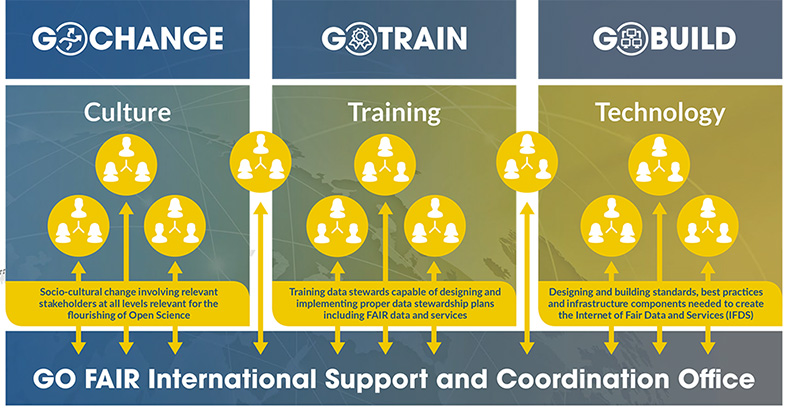

Findable/Achável - Propõe que outros podem descobrir os seus dados. Significa dados e metadados devem adotar um Identificador persistente único; os metadados devem ser ricos e ambos indexados em repositórios confiáveis.
Série 3 | Curso 2
Dados Abertos
Aula 4
FAIR: Dos princípios à prática
Seja bem-vindo a aula 4 do seu curso! Aqui você terá acesso ao o que é e aplicações do FAIR, um acrônimo para Findable, Accessible, Interoperable and Reusable (FAIR). Ele serve para apoiá-lo na gestão de dados e divulgação.
Aproveite o conteúdo e bons estudos!
Introdução
O Acesso Aberto da Fiocruz
Alguma vez você já teve problema com seu computador que levou à perda de dados ou informações importantes sobre a sua pesquisa? Se isso já aconteceu com você, quanto tempo levou para recuperar esses dados? Se você precisar consultar dados de mais de dois ou três anos atrás, ainda será capaz de entendê-los e fazer bom uso deles? Alguma vez, já leu uma publicação interessante e desejou ter acesso aos dados originais por considerá-los úteis para o seu trabalho? Você considera boa prática científica disponibilizar os dados e detalhes do seu experimento para que outros cientistas possam reproduzi-lo e verificar sua pesquisa? Ou, já pensou na economia de tempo e dinheiro se seus dados pudessem estar disponíveis para reutilização em novas pesquisas? Bem, se você já passou por alguma dessas situações, certamente conseguirá imaginar o quanto uma gestão de dados apropriada poderia evitar incidentes dessa natureza e contribuir para agilizar a expansão do conhecimento.
Foto de bruce mars no Pexels
A produção do conhecimento baseada em dados vem crescendo muito rapidamente. Além disso, novas tecnologias estão surgindo, facilitando o acesso, transferência e análise de dados - criando oportunidades inéditas para o avanço científico. No entanto, isso é potencializado se os dados de pesquisa estiverem bem descritos, bem estruturados, propriamente armazenados e disponíveis para outros utilizarem. Mas, como fazer isso? Perguntas dessa ordem estão permanentemente presentes no mundo científico, e com mais intensidade, nas práticas da ciência de dados. A resposta é simples, por meio de um adequado gerenciamento dos dados. Foi exatamente para atender tais necessidades que surgiram os princípios FAIR.
Mas que princípios são esses? O que eles representam? Para que servem e como implementá-los?
Historicamente, vale lembrar que as primeiras manifestações sobre o tema surgiram, entre 13 e 16 de Janeiro de 2014, quando um grupo de especialistas, representantes da academia, agências de fomento a pesquisa, editores científicos e representantes da área industrial se reuniram em um workshop intitulado Jointly designing a data FAIRPORT, no Lorentz Centre, em Leiden, Holanda. Esse encontro foi marcado pela discussão sobre a criação de uma infraestrutura global que pudesse dar suporte as publicações e os dados originados em pesquisa, promovendo seu compartilhamento, reutilização e até novas descoberta,. A partir desse encontro em Leiden, criou-se um conjunto de práticas orientadoras voltadas para a boa gestão de dados denominada “FAIR Principles”.
Tais princípios são, na realidade, um acrônimo para Findable, Accessible, Interoperable and Reusable (FAIR). Eles foram inicialmente disponibilizados para comentários no site do FORCE 112 e posteriormente publicados na revista Scientific Data, da Nature, em 2016, no artigo de Wilkinson, M. D. et al.(2016) denominado: The FAIR Guiding Principles for scientific data management and stewardship.
O que significa FAIR?
Siga as setas abaixo para entender o significado:

Fonte: FAIR data training
Como aplicar os Princípios FAIR na prática
Clique em cada um dos pontos do FAIR para conhecer seus princípios e aplicações:
-
Findable
Para serem encontrados
Princípios
F.1 (meta)dados devem ter identificadores globais, únicos e persistentes.
Como aplicar?
Adotar identificador único persistente tanto para o conjunto de dados quanto para os metadados (ex: DOI, ARK, RRID, PID).
Princípios
F.2 dados devem ser descritos utilizando metadados ricos (impacta diretamente R1).
Como aplicar?
O conjunto de dados deve ser descrito por metadados ricos o suficiente para que, uma vez indexados em um mecanismo de busca possam ser encontrados mesmo sem o seu identificador único persistente.
Princípios
F.3 metadados devem incluir clara e explicitamente os identificadores dos dados que descrevem.
Como aplicar?
Como não podemos prever que os dados e seus metadados estejam sempre juntos, a associação entre eles deve ocorre pela inclusão do identificador persistente dos dados nos metadados.
Princípios
F.4 meta)dados devem ser registrados ou indexados em mecanismos de busca.
Como aplicar?
Para que os dados sejam encontrados, seus metadados devem ser indexados em mecanismos de busca (search engine), que possibilitem aos computadores e usuários encontrá - los com facilidade.
-
Accessible
Para serem acessíveis
Princípios
A.1 (Meta) dados devem ser recuperáveis pelos seus identificadores usando protocolo de comunicação padronizado.
Como aplicar?
Com o identificador persistente do conjunto de dados e/ou de seus metadados, o usuário deverá recuperá - los mais facilmente por meio de protocolos de comunicação padronizados. (ex: HTTP ou FTP).
Princípios
A.1.1 O protocolo deve ser aberto, gratuito e universalmente implementável.
Como aplicar?
Independente de licenciamento dos dados e dos metadados, o protocolo de comunicação usado para dar acesso a eles deve ser aberto, gratuito e passível de ser implementado por qualquer interessado. (ex: HTTP ou Ftp).
Princípios
A.1.2 O protocolo deve permitir procedimentos de autenticação e autorização, quando necessário.
Como aplicar?
Dependendo das restrições de acesso aos dados e/ou metadados, um mecanismo de autenticação e autorização para o acesso deve ser liberado pelo protocolo de comunicação. (Ex: os repositórios confiáveis oferecem essa opção).
Princípios
A.2 Metadados devem ser acessíveis, mesmo quando os dados não estiverem mais disponíveis.
Como aplicar?
É preciso existir um conjunto de estratégias de preservação para dados e metadados. Os metadados devem ser sempre acessíveis, possibilitando a criação de índices para o conjunto de dados atuais vigentes e aqueles não mais disponíveis.
-
Interoperable
Para serem interoperáveis
Princípios
I.1 (Meta) dados devem ser representados por meio de uma linguagem formal, acessível, compartilhada e amplamente aplicável para a representação do conhecimento.
Como aplicar?
Para que se possa representar dados e metadados devem ser adotadas linguagens de representação do conhecimento que sejam padronizadas, acessíveis e amplamente aplicáveis. (Ex: RDF, XML, DICOM, etc.).
Princípios
I.2 (Meta) dados devem usar vocabulários de acordo com os princípios FAIR.
Como aplicar?
Dados e metadados devem possuir referências a vocabulários e/ou ontologias que os descrevem. Devemos garantir que esses também sigam os princípios FAIR.
Princípios
I.3 (Meta) dados devem incluir referências qualificadas para outros (Meta) dados.
Como aplicar?
É necessário referenciar o conjunto de dados, possibilitando que aqueles gerados a partir de outros conjuntos, sejam interligados. Assegurando a ligação semântica entre ele.
-
Reusable
Para serem reutilizáveis
Princípios
R.1 (Meta) dados são descritos com uma pluralidade de atributos precisos e relevantes.
Como aplicar?
Prover metadados descritos com alto nível de detalhes que permita ao pesquisador avaliar a possibilidade do seu reuso bem como adequação às suas necessidades.
Princípios
R.1.1 (Meta) dados devem ser disponibilizados com licenças de uso claras e acessíveis.
Como aplicar?
É fundamental que o responsável pelos dados e metadados defina explicitamente quem pode ter acesso a eles, com que finalidade e sob quais condições. Essas informações são definidas por meio de licenças de uso.
Princípios
R.1.2 (Meta) dados devem estar associados à sua proveniência.
Como aplicar?
Especificar a proveniência (linhagem) dos dados é importante não só para que o pesquisador possa avaliar a utilidade dos dados ou metadados, mas também para que possa atribuir o devido crédito a quem produziu, manteve ou editou esses dados. Dentre as informações relativas à proveniência destacam - se: a) A linhagem dos dados, ou seja, o processo de obtenção dos dados (gerado ou coletado); b) Particularidades ou limitações sobre os dados que outros pesquisadores devem; c) Data da geração do conjunto de dados, condições de laboratório, quem preparou os dados, configurações de parâmetros, nome e versão do software utilizado; d) Explicitar se são dados brutos ou processados; e) A versão dos dados arquivados e/ou reutilizados deve ser claramente especifica da e documentada.
Princípios
R.1.3 (Meta) dados devem estar alinhados com padrões relevantes do seu domínio.
Como aplicar?
Além de atender aos padrões específicos da área de cada comunidade deve - se dar atenção as boas práticas de arquivamento e compartilhamento específicos da área de pesquisa.
Fonte: Wilkinson, M. D. et al.(2016) tradução nossa.
Como implementar os Princípios FAIR
Como aplicar os Princípios FAIR na prática
Como foi possível observar, esses princípios, por si só, descrevem apenas um conjunto de atributos desejados para as boas práticas de gestão e tratamento dos recursos digitais, mas não trazem muitos esclarecimentos sobre como implementá-los. Mons et. al. (2017, p.50) afirmam que os princípios “deliberadamente não especificam requisitos técnicos, mas sim um conjunto de orientações para uma crescente reutilização contínua, por meio de diferentes implementações.” Para evitar interpretações equivocadas e imprecisas os princípios FAIR, Mons et. al. (2017, p. 52) apresentam alguns indicativos do que o FAIR não é.
Os princípios não têm a pretensão de impor qualquer tipo de padrão. Eles não são somente RDF ou dados conectados e Web Semântica. Os computadores devem ser capazes de acessar uma publicação de dados de forma autônoma, sem a ajuda de humanos. Os princípios FAIR podem ser igualmente utilizados por qualquer tipo de dado e serviço provenientes de qualquer disciplina.
Quem adota os Princípios FAIR?
Foto de Helena Lopes no Pexels
Os princípios FAIR estão em evidência no campo científico. Eles são úteis para os pesquisadores na medida em que ajuda a organizar e tratar os dados, contribuindo para a qualidade do registro da pesquisa. As principais agências de fomento estão incorporando-os como parte das orientações para aquisição de financiamento ao reconhecê-los como parte das estratégias para agregar valor e transparência ao resultado de pesquisas por elas financiadas. As instituições de pesquisa estão incluindo-os em suas políticas de Ciência Aberta enquanto diversas universidades também estão inserindo esses princípios nas suas políticas de acesso e dados abertos de pesquisa, considerando que a gestão dos dados aumenta a transparência, apoia a reprodutibilidade e a integridade em pesquisa, além de favorecer o reuso dos dados. Os editores, por sua vez, entendem que os princípios melhoram o processo de revisão por pares, além de gerar maior publicidade às investigações.
A Iniciativa Go FAIR
Com o intuito de disseminar os princípios e serviços FAIR e dar orientações basilares de como implementá-los, surgiu em 2017 o GO FAIR, uma iniciativa holandesa, alemã e francesa que adota metodologias bottom-up e incentiva a criação de redes independentes e autônomas pelas comunidades científicas. Tais redes podem se filiar espontaneamente ao Global Open FAIR (GO FAIR) de acordo com a sua filosofia e orientação.
Na Europa, as atividades da GO FAIR contribuem para a implantação da European Open Science Cloud (EOSC) voltada não só para a pesquisa e desenvolvimento, mas também para indústria e inovação. Esta iniciativa tem a prioridade tornar todos os tipos de dados que atualmente se encontram fragmentados e desconectados, mais facilmente localizáveis, acessíveis, interoperáveis e reutilizáveis - que significa serem FAIR.
A iniciativa GO FAIR está sustentada por três pilares, como você verá ao lado:

Fonte: go-fair.org
GO CHANGE
Foca nas prioridades e políticas, incentivando a implementação do FAIR. Promove mudanças socioculturais que envolvem importantes atores de todos os níveis, visando tornar os princípios FAIR um padrão de trabalho na ciência.
GO TRAIN
Trata da da definição de currículos e programas de treinamento sobre o gerenciamento de dados. Sua meta é facilitar a capacitação de profissionais em gestão de dados.
GO BUILD
Aborda o tema das infraestruturas para dados interoperáveis, criando padrões, protocolos e serviços compatíveis e possibilitando que o pesquisador deposite, acesse e analise dados científicos de todas as áreas.
O GO FAIR chega ao Brasil através do Instituto Brasileiro de Informação em Ciência e Tecnologia (IBICT) e sua responsabilidade é difundir, apoiar e coordenar as atividades relacionadas à adoção das estratégias de implementação dos princípios FAIR, de acordo com as especificidades das áreas do conhecimento, em todo o território nacional. Na área da saúde, o GO FAIR Brasil-Saúde é a rede de implementação responsável pela elaboração de estratégias de adoção dos princípios FAIR neste domínio. Sua coordenação está sob a responsabilidade do Instituto de Comunicação e Informação Científica e Tecnologia em Saúde (ICICT) da Fundação Oswaldo Cruz (Fiocruz) e conta com a participação de diversas instituições das áreas de Saúde Pública, Vigilância Sanitária, Informação e Comunicação em Saúde, História do Patrimônio Cultural das Ciências e da Saúde, Oncologia, Enfermagem e Educação Profissional em Saúde.
Conclusão
Nesse curso você aprendeu sobre o FAIR, seu significado e aplicações.
Agora, você concluiu mais esse módulo! Até a próxima aula. Bom trabalho!